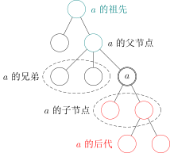
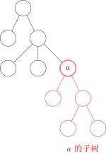
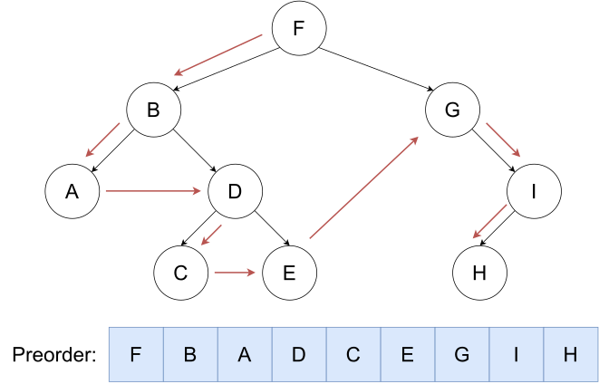
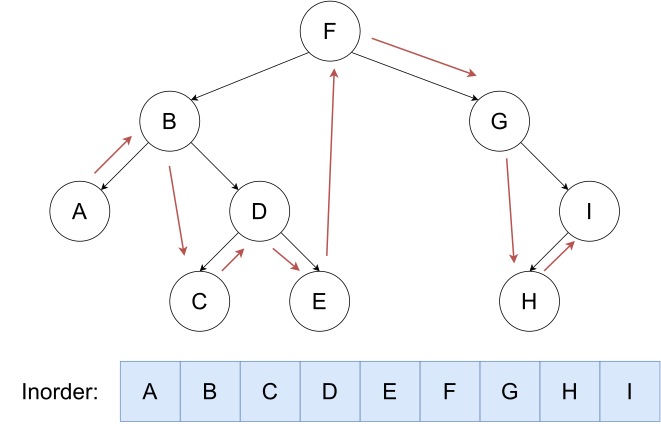
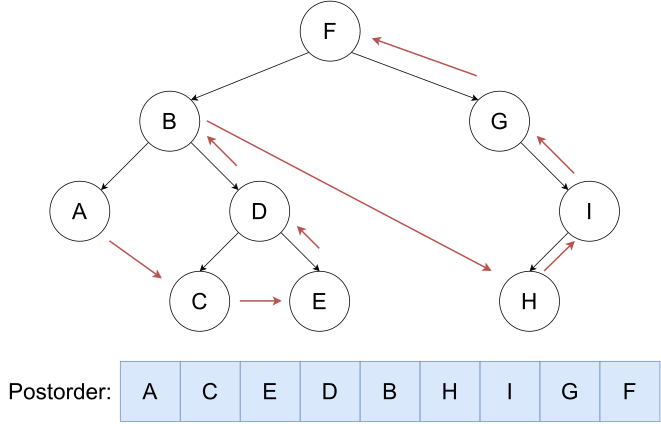
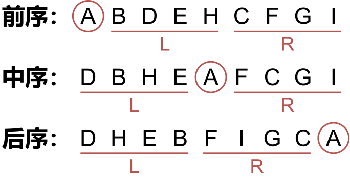
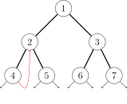

Tree basic
引入
图论中的树和现实生活中的树长得一样，只不过我们习惯于处理问题的时候把树根放到上方来考虑．这种数据结构看起来像是一个倒挂的树，因此得名．
定义
一个没有固定根结点的树称为 无根树（unrooted tree）．无根树有几种等价的形式化定义：
-
有 $n$ 个结点，$n-1$ 条边的连通无向图
-
无向无环的连通图
-
任意两个结点之间有且仅有一条简单路径的无向图
-
任何边均为桥的连通图
-
没有圈，且在任意不同两点间添加一条边之后所得图含唯一的一个圈的图
在无根树的基础上，指定一个结点称为 根，则形成一棵 有根树（rooted tree）．有根树在很多时候仍以无向图表示，只是规定了结点之间的上下级关系，详见下文．
有关树的定义
适用于无根树和有根树
-
森林（forest）：每个连通分量（连通块）都是树的图．按照定义，一棵树也是森林．
-
生成树（spanning tree）：一个连通无向图的生成子图，同时要求是树．也即在图的边集中选择 $n - 1$ 条，将所有顶点连通．
-
无根树的叶结点（leaf node）：度数不超过 $1$ 的结点．
???+ question "为什么不是度数恰为 $1$？" 考虑 $n = 1$．
-
有根树的叶结点（leaf node）：没有子结点的结点．
只适用于有根树
- 父亲（parent node）：对于除根以外的每个结点，定义为从该结点到根路径上的第二个结点．
根结点没有父结点． - 祖先（ancestor）：一个结点到根结点的路径上，除了它本身外的结点．
根结点的祖先集合为空． - 子结点（child node）：如果 $u$ 是 $v$ 的父亲，那么 $v$ 是 $u$ 的子结点．
子结点的顺序一般不加以区分，二叉树是一个例外． - 结点的深度（depth）：到根结点的路径上的边数．
- 树的高度（height）：所有结点的深度的最大值．
- 兄弟（sibling）：同一个父亲的多个子结点互为兄弟．
- 后代（descendant）：子结点和子结点的后代．
或者理解成：如果 $u$ 是 $v$ 的祖先，那么 $v$ 是 $u$ 的后代．

-
子树（subtree）：删掉与父亲相连的边后，该结点所在的子图．

特殊的树
-
链（chain/path graph）：满足与任一结点相连的边不超过 $2$ 条的树称为链．
-
菊花/星星（star）：满足存在 $u$ 使得所有除 $u$ 以外结点均与 $u$ 相连的树称为菊花．
-
有根二叉树（rooted binary tree）：每个结点最多只有两个儿子（子结点）的有根树称为二叉树．常常对两个子结点的顺序加以区分，分别称之为左子结点和右子结点．
大多数情况下，二叉树 一词均指有根二叉树． -
完整二叉树（full/proper binary tree）：每个结点的子结点数量均为 0 或者 2 的二叉树．换言之，每个结点或者是树叶，或者左右子树均非空．
-
完全二叉树（complete binary tree）：只有最下面两层结点的度数可以小于 2，且最下面一层的结点都集中在该层最左边的连续位置上．
-
完美二叉树（perfect binary tree）：所有叶结点的深度均相同，且所有非叶节点的子节点数量均为 2 的二叉树称为完美二叉树．
???+ warning "Warning" Proper binary tree 的汉译名称不固定，且完全二叉树和满二叉树的定义在不同教材中定义不同，遇到的时候需根据上下文加以判断．
OIers 所说的「满二叉树」多指完美二叉树．
存储
只记录父结点
用一个数组 parent[N] 记录每个结点的父亲结点．
这种方式可以获得的信息较少，不便于进行自顶向下的遍历．常用于自底向上的递推问题中．
邻接表
- 对于无根树：为每个结点开辟一个线性列表，记录所有与之相连的结点．
cpp std::vector<int> adj[N]; - 对于有根树：
- 方法一：若给定的是无向图，则仍可以上述形式存储．下文将介绍如何区分结点的上下关系．
- 方法二：若输入数据能够确保结点的上下关系，则可以利用这个信息．为每个结点开辟一个线性列表，记录其所有子结点；若有需要，还可在另一个数组中记录其父结点．
cpp std::vector<int> children[N]; int parent[N];当然也可以用其他方式（如链表）替代std::vector．
左孩子右兄弟表示法
过程
对于有根树，存在一种简单的表示方法．
首先，给每个结点的所有子结点任意确定一个顺序．
此后为每个结点记录两个值：其 第一个子结点 child[u] 和其 下一个兄弟结点 sib[u]．若没有子结点，则 child[u] 为空；若该结点是其父结点的最后一个子结点，则 sib[u] 为空．
实现
遍历一个结点的所有子结点可由如下方式实现．
int v = child[u]; // 从第一个子结点开始
while (v != EMPTY_NODE) {
// ...
// 处理子结点 v
// ...
v = sib[v]; // 转至下一个子结点，即 v 的一个兄弟
}
也可简写为以下形式．
for (int v = child[u]; v != EMPTY_NODE; v = sib[v]) {
// ...
// 处理子结点 v
// ...
}
二叉树
需要记录每个结点的左右子结点．
???+ note "实现"
cpp
int parent[N];
int lch[N], rch[N];
// -- or --
int child[N][2];
树的遍历
树上 DFS
在树上 DFS 是这样的一个过程：先访问根节点，然后分别访问根节点每个儿子的子树．
可以用来求出每个节点的深度、父亲等信息．
二叉树 DFS 遍历
先序遍历

按照 根，左，右 的顺序遍历二叉树．
???+ note "实现"
cpp
void preorder(BiTree* root) {
if (root) {
cout << root->key << " ";
preorder(root->left);
preorder(root->right);
}
}
中序遍历

按照 左，根，右 的顺序遍历二叉树．
???+ note "实现"
cpp
void inorder(BiTree* root) {
if (root) {
inorder(root->left);
cout << root->key << " ";
inorder(root->right);
}
}
后序遍历

按照 左，右，根 的顺序遍历二叉树．
???+ note "实现"
cpp
void postorder(BiTree* root) {
if (root) {
postorder(root->left);
postorder(root->right);
cout << root->key << " ";
}
}
反推
已知中序遍历序列和另外一个序列可以求第三个序列．

- 前序的第一个是
root，后序的最后一个是root． - 先确定根节点，然后根据中序遍历，在根左边的为左子树，根右边的为右子树．
- 对于每一个子树可以看成一个全新的树，仍然遵循上面的规律．
树上 BFS
从树根开始，严格按照层次来访问节点．
BFS 过程中也可以顺便求出各个节点的深度和父亲节点．
树的层序遍历
树层序遍历是指按照从根节点到叶子节点的层次关系，一层一层的横向遍历各个节点．根据 BFS 的定义可以知道，BFS 所得到的遍历顺序就是一种层序遍历．但层序遍历要求将不同的层次区分开来，所以其结果通常以二维数组的形式表示．
例如，下图的树的层序遍历的结果是 [[1], [2, 3, 4], [5, 6]]（每一层从左向右）．
???+ note "实现"
cpp
vector<vector<int>> levelOrder(Node* root) {
if (!root) {
return {};
}
vector<vector<int>> res;
queue<Node*> q;
q.push(root);
while (!q.empty()) {
int currentLevelSize = q.size(); // 当前层的节点个数
res.push_back(vector<int>());
for (int i = 0; i < currentLevelSize; ++i) {
Node* cur = q.front();
q.pop();
res.back().push_back(cur->val);
for (Node* child : cur->children) { // 把子节点都加入
q.push(child);
}
}
}
return res;
}
二叉树 Morris 遍历
二叉树遍历的核心问题是，当遍历当前节点的子节点后，如何返回当前节点并继续遍历．遍历二叉树的递归方法和非递归方法都使用了栈结构，记录返回路径，来实现从下层到上层的移动．其空间复杂度最好时为 $O(\log n)$，最坏时为 $O(n)$（二叉树呈线性）．
Morris 遍历的实质是避免使用栈，利用底层节点空闲的 right 指针指回上层的某个节点，从而完成下层到上层的移动．
Morris 遍历的过程
假设来到当前节点 cur，开始时来到根节点位置．
- 如果
cur为空时遍历停止，否则进行以下过程． - 如果
cur没有左子树，cur向右移动（cur = cur->right）． - 如果
cur有左子树，找到左子树上最右的节点，记为mostRight．- 如果
mostRight的right指针指向空，让其指向cur，然后cur向左移动（cur = cur->left）． - 如果
mostRight的right指针指向cur，将其修改为null，然后cur向右移动（cur = cur->right）．
- 如果
例如，cur 从节点 1 开始访问．
cur 第一次访问节点 2 时，找到左子树上最右的节点 4，将 4 的 right 指针指向 cur（节点 2)．

cur 通过 4 的 right 指针返回上层，第二次访问节点 2 时，找到左子树上最右节点 4，将 4 的 right 指针修改为 null，然后继续访问右子树．之后的过程省略．
整棵树的访问顺序是 1242513637．可以发现有左子树的节点访问两次，没有左子树的节点只访问一次．
???+ note "实现"
cpp
void morris(TreeNode* root) {
TreeNode* cur = root;
while (cur) {
if (!cur->left) {
// 如果当前节点没有左子节点，则输出当前节点的值并进入右子树
std::cout << cur->val << " ";
cur = cur->right;
continue;
}
// 找到当前节点的左子树的最右节点
TreeNode* mostRight = cur->left;
while (mostRight->right && mostRight->right != cur) {
mostRight = mostRight->right;
}
if (!mostRight->right) {
// 如果最右节点的right指针为空，将其指向当前节点，并进入左子树
mostRight->right = cur;
cur = cur->left;
} else {
// 如果最右节点的right指针指向当前节点，说明左子树已经遍历完毕，输出当前节点的值并进入右子树
mostRight->right = nullptr;
std::cout << cur->val << " ";
cur = cur->right;
}
}
}
无根树
过程
树的遍历一般为深度优先遍历，这个过程中最需要注意的是避免重复访问结点．
由于树是无环图，因此只需记录当前结点是由哪个结点访问而来，此后进入除该结点外的所有相邻结点，即可避免重复访问．
???+ note "实现" ```cpp void dfs(int u, int from) { // 递归进入除了 from 之外的所有子结点 // 对于出发结点，from 为空，故会访问所有相邻结点，这与期望一致 for (int v : adj[u]) if (v != from) { dfs(v, u); } }
// 开始遍历时
int EMPTY_NODE = -1; // 一个不存在的编号
int root = 0; // 任取一个结点作为出发点
dfs(root, EMPTY_NODE);
```
有根树
对于有根树，需要区分结点的上下关系．
考察上面的遍历过程，若从根开始遍历，则访问到一个结点时 from 的值，就是其父结点的编号．
通过这个方式，可以对于无向的输入求出所有结点的父结点，以及子结点列表．
本页面部分内容引用自博文 二叉树：前序遍历、中序遍历、后续遍历，遵循 CC 4.0 BY-SA 版权协议．